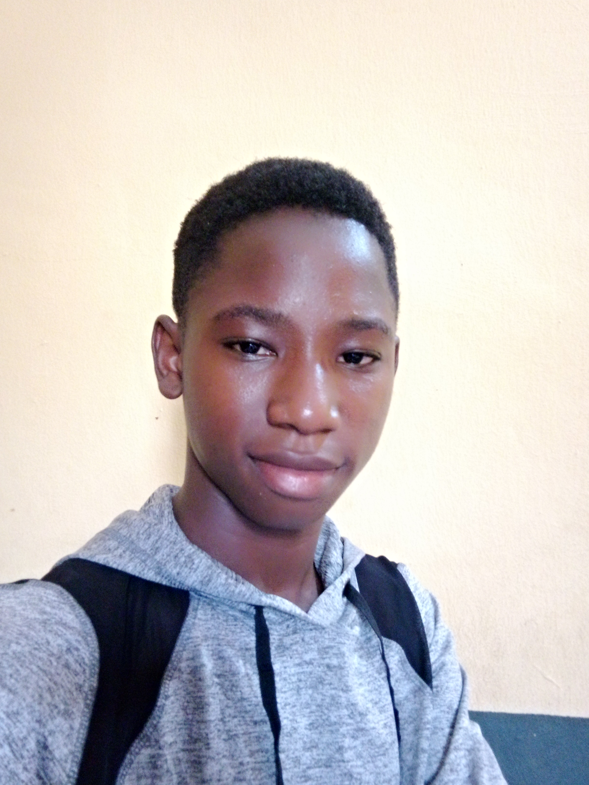

Niffy Website
Nifemi Olabisi's Resume

Olabisi Oluwanifemi David
Student
Objective Statement
An hardworking student seeking employment. Ready and willing to utilize my skills to further
the purpose and growth of a company. A technologically adept young man with advanced computer
skills and experience in technology programs. Bringing forth a positive attitude and the eagerness
amd motivation to learn new programs and lessons.
Education
Bachelor of Computer Science and Cyber security, OAU University, Osun state, Nigeria
October 2024 - October 2028
Secondary School leaving Certificate, ACEDSS, Ondo State, Nigeria
September 2016 - September 2022
Work experience
-
Skills
- Website creation and editing
- Video & Photo editing
- Content creation
Contact Me